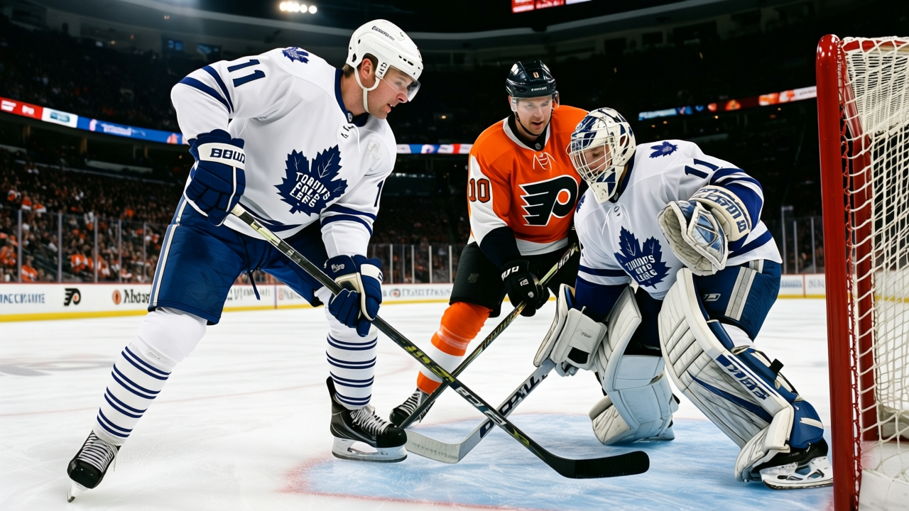

Dollar-per-Point: The Expiring Class, Ranked
Mike Comrie is producing 48 points in 26 games on $1.00M. That works out to $0.02M per point, the cheapest top-line contract in hockey. Mike Sillinger, one slot up the depth chart in PHX, is producing 27 points in 26 gam…


 Doug Reimer·5 min read
Doug Reimer·5 min read